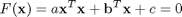
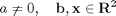
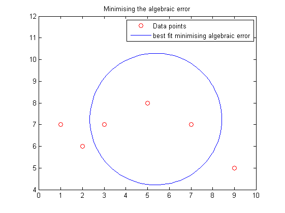
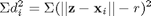
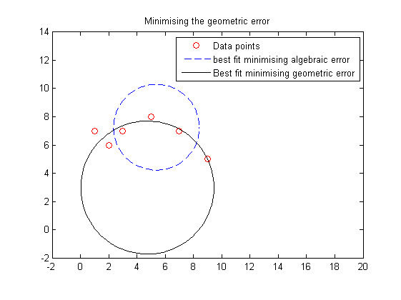

Fitcircle Demonstration
This publishable m-file demonstrates fitcircle, a function for finding the best fit circle by least squares. The implementation is based on Least-Squares Fitting of Circles and Ellipses, W. Gander, G.H. Golub, R. Strebel, BIT Numerical Mathematics, Springer, 1994
Contents
Fitting circles by minimising algebraic distance (linear least squares)
Consider an algebraic representation of a circle in the plane:

where

This equation can be minimised by linear least squares. The drawback to this approach is that geometrically, it's not clear what exactly is being minimised. In the following example it's clear that this does not always yield optimal results. fitcircle can be used to obtain this solution as follows:
% Set of points x = [1 2 5 7 9 3; 7 6 8 7 5 7]; % Find the linear least squares fit [zl, rl] = fitcircle(x, 'linear'); % And plot the results t = linspace(0, 2*pi, 100); plot(x(1,:), x(2,:), 'ro', ... zl(1) + rl * cos(t), zl(2) + rl * sin(t), 'b') axis equal axis([0 10 4 12]) title('Minimising the algebraic error') legend('Data points', 'best fit minimising algebraic error')
Best Fit - minimising geometric distance
The true best fit of a circle minimises the geometric error, i.e. the sum of the squares of distances

where z is the centre of the circle, and r the radius. This is a nonlinear least squares problem and can be solved using fitcircle as follows (c.f. the algebraic fit):
% Set of points x = [1 2 5 7 9 3; 7 6 8 7 5 7]; % Find the linear least squares fit [zl, rl] = fitcircle(x, 'linear'); % Find the best geometric fit [z, r] = fitcircle(x); % And plot the results t = linspace(0, 2*pi, 100); plot(x(1,:), x(2,:), 'ro', ... zl(1) + rl * cos(t), zl(2) + rl * sin(t), 'b--', ... z(1) + r * cos(t), z(2) + r * sin(t), 'k') axis equal axis([-2 20 -2 14]) title('Minimising the geometric error') legend('Data points', 'best fit minimising algebraic error', ... 'Best fit minimising geometric error')